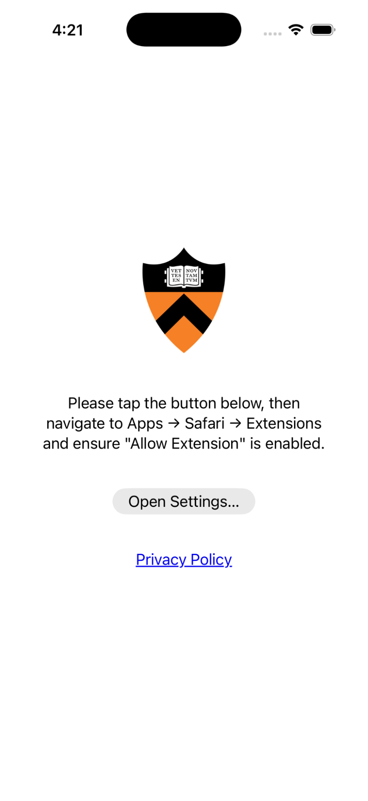
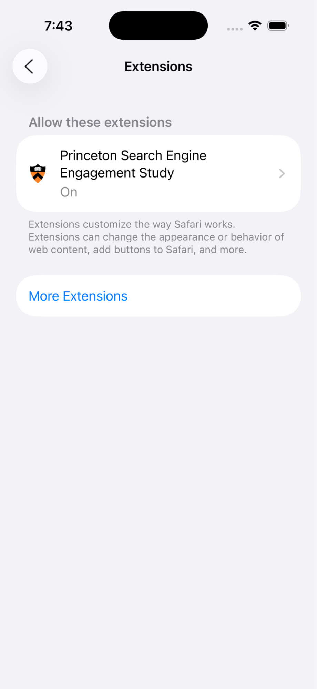
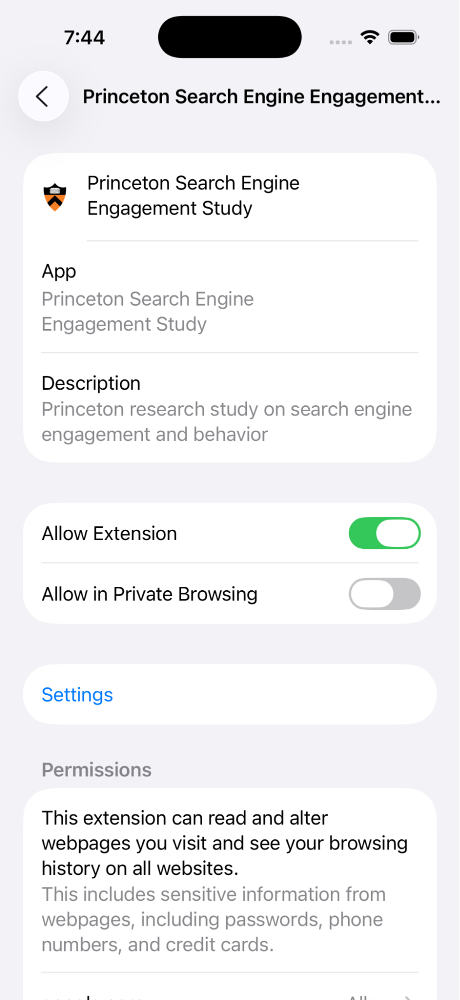
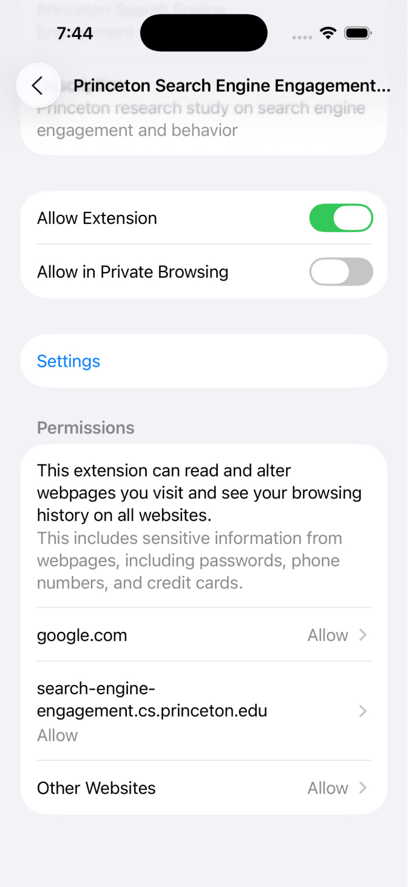

On your iPhone, a Safari extension is a quick way of adding functionality to how the browser
operates. For this next step in the study, we will ask you to install and run an extension. This
extension will set a default search mode when you use Google. For more information on what
specific data we collect through this extension, please refer to
this page.
Please follow the steps below to install and run the required extension on your iPhone.
- Tap this link to access the Extension.
- Install the Extension.
-
After Installation, the Extension should appear as an App with the following screen:

-
Click on Open Settings, which will open the list of Apps on your device in Settings.
Scroll down and click on Safari, then navigate to the Extensions subpage, and ensure
that the Princeton Search Engine Engagement Study is toggled on.
- Make sure that you do not have any Screen Time restrictions or restrictive apps active (e.g., Opal). If they are active you may not be able to turn on the extension after installation (the extension may appear greyed out).


-
Next, make sure that Permissions are “Allow” for
google.com,
search-engine-engagement.cs.princeton.edu,
and Other Websites.

- Open your Safari app. It should redirect you to the feedback page. If you have the Google app installed, you will be unable to proceed. Please delete the Google app and try again.
-
[We will display a notice explaining that participants may receive a permission prompt to
allow the Extension to modify Safari. After participants continue, iOS may request this
permission. The notice that we will display reads:
You may receive a prompt on your iPhone about allowing this Extension to access certain sites Safari. This relates to your participation in the study and is needed to continue. If you receive this prompt, please tap Allow Always.]
- If the selected mode does not appear for you, please check to make sure you are not using a VPN and that you are located in the United States.
The extension must be installed for at least two weeks for your participation to be considered complete. After two weeks, we may ask you to participate in a follow-up study. After the follow-up, you may uninstall the extension; otherwise, it will automatically uninstall after 1 month.